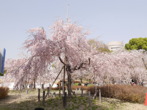
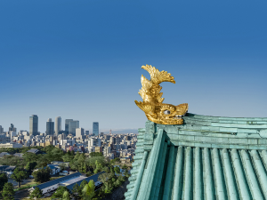
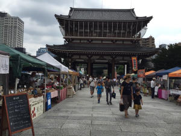

Now is the season. Event special feature in Nagoya.
Tsurumai Spring Park Date: March 25, 2021 to June 6, 2021Nagoya Castle Kinshachi Special Exhibition Date: April 10, 2021 to July 11, 2021Higashi Betsuin Living Morning Market Dates: 8th, 18th, 28th of every month
History
Nagoya has expanded mainly in two areas: the town of Atsuta centered on the historic Atsuta Shrine and the castle town built by Ieyasu Tokugawa. Atsuta Shrine has a history of over 1900 years and has prospered as a post town with constant worshipers. Sakae became the most downtown area in Nagoya after Ieyasu Tokugawa built Nagoya Castle. Since the establishment of the Aichi Prefectural Office in the Meiji era, it has functions as a police, postal service, and government office district, and a large department store has opened, making it the center of Nagoya for both business and commerce. And it became a culturally enjoyable town with lush parks, art galleries and museums.